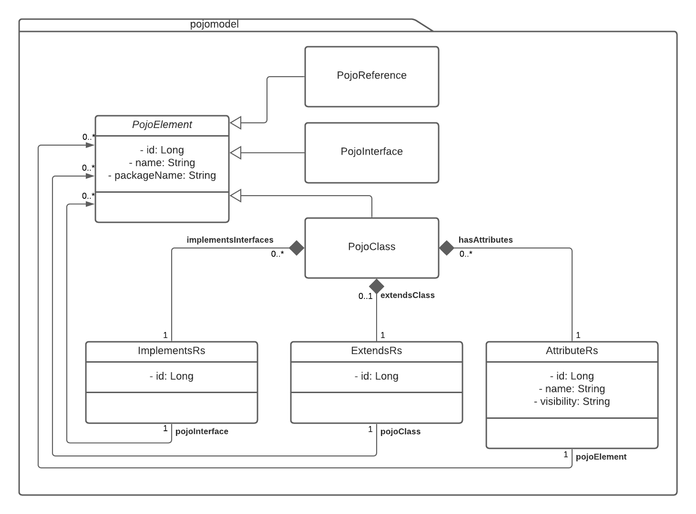
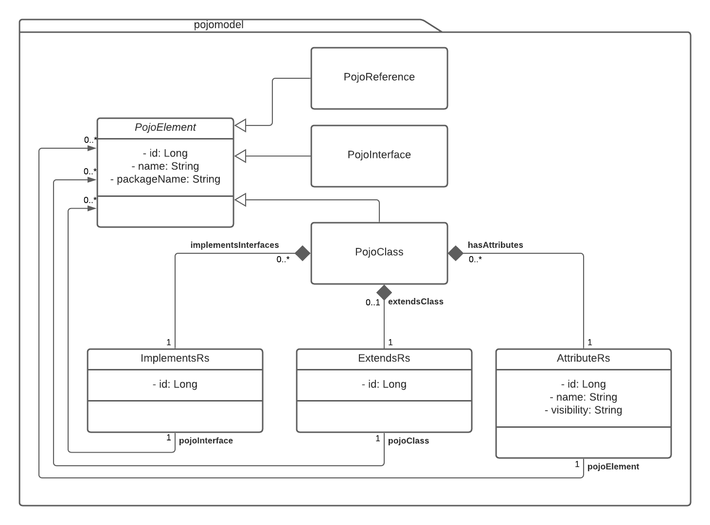

Package de.fh.kiel.advancedjava.pojoapplication.pojomodel
Model layer of the PojoApplicattion. Contains the data models for the different Pojos for the neo4j database.
The structure is shown in the image below.


-
Class Summary Class Description AttributeRs AttributeRs describes a attribute relationship between a PojoClass and PojoClass, PojoReference or PojoInterfaceExtendsRs ExtendsRs describes an inheritance relationship between a PojoClass and another PojoClass or PojoReferenceImplementsRs ImplementsRs describes a relationship between a PojoClass and a PojoInterface, which the PojoClass implementsPojoClass PojoClass represents a standard java classPojoElement PojoElement is the base class for all POJO classesPojoInterface PojoInterface represents a java interface.PojoReference PojoReference represents a standard java class that was added to the database without its bytecode, either manually or through referencing in another Pojo